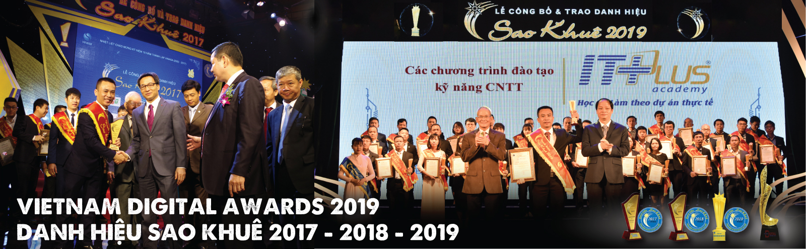

Giới thiệu về ITPlus Academy
ITPLUS ACADEMY – HỌC VÀ LÀM THEO DỰ ÁN THỰC TẾ
ITPlus Academy được thành lập từ năm 2011 với nhiệm vụ nghiên cứu, ứng dụng khoa học công nghệ đào tạo nhân lực chất lượng cao ngành Công nghệ thông tin. Dựa vào nhu cầu thực tế của các Tập đoàn Công nghệ thông tin, ITPlus Academy hợp tác với Học viện Công nghệ Bưu chính Viễn thông, Đại Học Sư Phạm Nghệ Thuật Trung Ương, Đại Học Sân Khấu Điện Ảnh triển khai chương trình đào tạo chuyên sâu với các chuyên ngành: Lập trình ứng dụng và Thiết kế đồ họa – Truyền thông Đa phương tiện.
Sau 7 năm phát triển ITPlus Academy đã đào tạo hơn 8000 sinh viên, hợp tác với hơn 50 doanh nghiệp hàng đầu trong lĩnh vực công nghệ thông tin và thiết kế đồ họa như: Samsung, LG, FPT Software, Viettel, VNPT, CMC, VCCorp, Netnam, Tinh Vân, VNG, Gameloft, Esoftflow, Telsoft, Izisolution, Ecommage, Vnext, EcoIT…. mang đến cơ hội việc làm rộng mở cho sinh viên ngay sau khi tốt nghiệp.
Các chương trình đào tạo của ITPlus Academy được nhận "Giải thưởng Sao Khuê 2017, 2018 & 2019" cho các sản phẩm, dịch vụ xuất sắc nhất ngành phần mềm và dịch vụ Công Nghệ Thông Tin của Việt Nam.

TẦM NHÌN
- ITPlus Academy phấn đấu trở thành đơn vị đào tạo nguồn nhân lực có kỹ năng về Công nghệ thông tin chất lượng cao, là cầu nối quan trọng và uy tín giữa doanh nghiệp với nhân lực ngành Công nghệ thông tin.
SỨ MỆNH
-
Đối với học viên: Đào tạo chuyên nghiệp, cung cấp kiến thức, kỹ năng CNTT cũng như tạo cơ hội việc làm và cơ hội tiếp cận gần hơn với nhà tuyển dụng.
-
Đối với các doanh nghiệp: Cung cấp nguồn nhân lực được trang bị các kỹ năng về công nghệ thông tin, đảm bảo nguồn nhân lực chất lượng cao đáp ứng các dự án thực tế của doanh nghiệp.